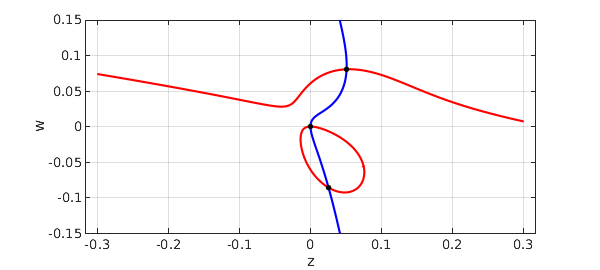

Priya Subramanian at Oxford is interested in the patterns that arise in nonlinear reaction-diffusion PDEs such as the Swift-Hohenberg equation and its relatives [2,3,4]. A particular interest of hers is cases where the patterns may have quasicrystalline structure.
In her analysis, systems of polynomial equations arise whose roots need to be computed. She uses the Bertini software for this, based on a homotopy method [1]. Sometimes there are just two independent variables, however, and this gives nice problems for Chebfun2 (chapter 14 of the Chebfun Guide).
Here is one of her examples. We have parameters $Q$, $\mu$, and $\nu$, for which reasonable parameters are these:
Q = 1; mu = 0.1; nu = 0.1;
The independent variables are called $z$ and $w$, and here are the two cubic polynomials of interest:
tic dom = [-.3 .3 -.15 .15]; z = chebfun2(@(z,w) z, dom); w = chebfun2(@(z,w) w, dom); p = mu*z + 2*Q*w.^2 + 4*Q*w.*z - 6*w.^3 - 42*w.^2.*z - 18*w.*z.^2 - 27*z.^3; q = nu*w + 4*Q*w.*z + 2*Q*z.^2 - 27*w.^3 - 18*w.^2.*z - 42*w.*z.^2 - 6*z.^3;
Let's plot the zero curves in blue for $p$ and red for $q$, with black dots for the common roots:
MS = 'markersize'; plot(roots(p),'b'), hold on, grid on plot(roots(q),'r') r = roots(p,q) plot(r(:,1),r(:,2),'.k',MS,12), axis equal, hold off xlabel z, ylabel w
r = -0.090831644586318 0.035835847280723 -0.016094658586370 0.042959596438007 -0.013740321798295 -0.013740321798295 -0.000000000000000 -0.000000000000000 0.035835847280723 -0.090831644586318 0.042959596438006 -0.016094658586370 0.078256450830553 0.078256450830553

For comparison, here is what we get if we negate $\mu$:
mu = -0.1; p = mu*z + 2*Q*w.^2 + 4*Q*w.*z - 6*w.^3 - 42*w.^2.*z - 18*w.*z.^2 - 27*z.^3; plot(roots(p),'b'), hold on, grid on plot(roots(q),'r') r = roots(p,q) plot(r(:,1),r(:,2),'.k',MS,12), axis equal, hold off xlabel z, ylabel w
r = -0.000000000000000 -0.000000000000000 0.025417412018832 -0.086077285970434 0.050811642467768 0.080598330616729

Time_for_this_example = toc
Time_for_this_example = 3.271037000000000
[1] D. J. Bates, J. D. Hauenstein, A. J. Sommese, and C. W. Wampler, Numerically Solving Polynomial Systems with Bertini, SIAM, 2013.
[2] H. Montanelli, Swift-Hohenberg equation in 2D, www.chebfun.org/examples/pde/SwiftHohenberg.html.
[3] P. Subramanian, A. J. Archer, E. Knobloch, and A. M. Rucklidge, Three-dimensional phase field quasicrystals, Physical Review Letters 117:1075501, 2016.
[4] P. Subramanian and A. M. Rucklidge, Mode interactions and complex spatial patterns II. Quasicrystals, in preparation.